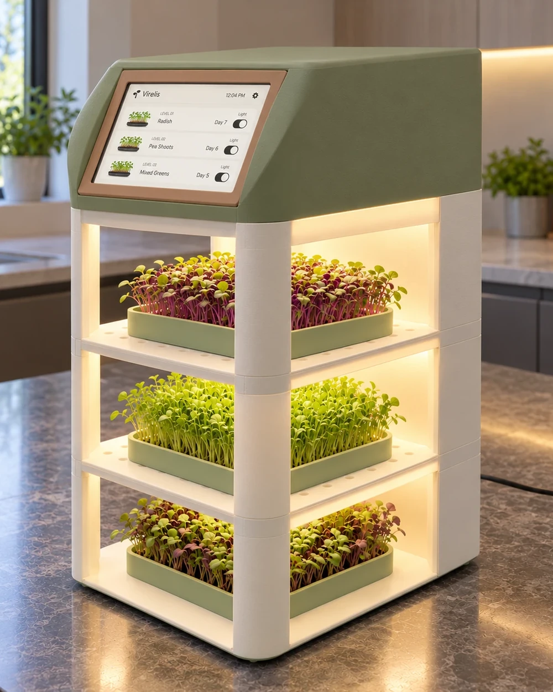

Micro Pak Choy.
Pak choi microgreen research measured vitamin C, lutein and beta-carotene, a compound the body can use to make vitamin A. This is crop research, not a tested Virelis harvest. [1]
Virelis In development
A countertop microgreens grower
A compact, three-tier countertop appliance designed to automate watering and help grow fresh microgreens indoors.
The aim is fewer things to keep track of, in an appliance that feels at home in the kitchen. Pre-seeded refill mats and support for compatible homemade mats are in development too.
As of 17 November 2026, the Pro prototype is nearing completion and Classic is in development. Only Mixed Greens has been grown in Virelis so far. Automatic watering is incomplete; we're improving spray coverage and drip control. Nothing is on sale yet.

Classic & Pro · In development
Both are intended to grow the same produce with minimal intervention. Pro adds convenience, information and control. Better harvests are not promised.

| Feature | Classic | Pro |
|---|---|---|
| Development status | In development | Prototype nearing completion |
| Water delivery | Automatic | Automatic |
| Controls | Three buttons Screen-free | Touchscreen |
| Lighting | Manual toggle | Automatic schedule |
| Harvest estimates | Not included | Species-based |
| Active heating / cooling | None | None |
| Wi-Fi | Not required | Optional for date/time |
These are intended model features, not production-ready specifications. As of 17 November 2026, Classic is in development and Pro is nearing prototype completion. Images are design renders. Prediction accuracy is not yet validated; estimates are not guaranteed harvest dates. Watering doses and schedules may differ between Classic and Pro without promising different growing results.
Classic has three independent light controls, one per tier. Pro adds touchscreen controls, automatic light scheduling and species-based harvest estimates.
Pro estimates use the selected species as a guide to timing, rather than a guaranteed harvest date.
Virelis is sensorless. Automatic water delivery is intended for both models, but there is no environmental sensing, humidity control or fan control. Neither model has active heating or cooling. Pro estimates are species-based, not a live assessment of the crop.
No app or cloud connection is required for growing. Pro can optionally use Wi-Fi to set the date and time. Controls stay on the appliance.
From the bench to your plate
Colour, variety and something fresh for lunch. Published crop studies have also measured vitamins, minerals and other plant compounds in these microgreens. Here's what that research tells us.
Our intended launch choices: Mixed Greens, Micro Pak Choy, Cress moss and Kohlrabi purple.
What researchers measured in the crops. These are not nutrition labels for our refills.
Pak choi microgreen research measured vitamin C, lutein and beta-carotene, a compound the body can use to make vitamin A. This is crop research, not a tested Virelis harvest. [1]
Moss-curled cress is garden cress, Lepidium sativum. Published research measured vitamin C and phenolic compounds in its microgreens. Add its peppery leaves to sandwiches or eggs; our own harvests have not been nutritionally tested. [2]
Researchers measured vitamin C, calcium, potassium, lutein and beta-carotene in Purple Vienna kohlrabi microgreens. The colour is only part of the story; amounts vary with the crop and growing conditions. [1]
We haven't lab-tested a Virelis harvest. These are findings from published crop research, not guaranteed nutrient amounts, daily-intake percentages or proof of health benefits from our refills or appliance. Variety, growing conditions, harvest stage, storage and portion size matter. Final seed-lot identities and blend contents still need confirmation.
Mixed Greens is a blend of several seed varieties on each mat, not an assortment of separate mats. It is the only blend grown in Virelis so far; the other choices are being sourced. We haven't measured comparisons with normal growing kits or supermarket produce, and make no efficiency, yield, cost-saving or nutritional-superiority claim.
Prototype progress · 17 November 2026
The November prototype photo shows microgreens on all three shelves. It has minor edits, mainly to the background. Only Mixed Greens has been grown in Virelis so far, with some functions still manually controlled. The other launch varieties are being sourced.
The Pro prototype is nearing completion, not production-ready. We still need to reduce dripping and achieve a wider spray cone. Classic is also in development. Qualified safety review is still to come before customer use, and no formal approval has been obtained.
The image above is the updated design render. It shows the finish we're working towards.

The growing routine
The intended setup needs Virelis, pre-seeded mats and water. Mats germinate directly inside the machine without blackout covers. Use up to three mats, one per tier; unused tiers can remain empty.
Each tier has its own pump, fed from a shared reservoir. The tiers operate independently, so different varieties can be grown at different stages. Water does not recirculate. The current prototype still needs manual control of some functions; spray coverage, drip control and the final care routine need more testing.
You'll check the water level visually and top up as needed. Harvest by cutting the greens with scissors: one harvest per mat, then a fresh mat for the next grow. Refilling, draining and cleaning guidance will be confirmed after testing.
Leave room in front to get the trays in and out, and space behind for ventilation. Required clearances still need testing. We'll publish measured external dimensions and weight before launch; the mat size below is not an appliance dimension.
Our launch refill range
Our pre-seeded mats come in packs of 9, 18 or 27. Keep them all the same or mix Mixed Greens, Micro Pak Choy, Cress moss and Kohlrabi purple in groups of three per variety. Groups of three are for packing and logistics, not a growing requirement. Virelis holds at most three mats, one per tier, but you don't have to fill every tier or start them together.
Mixed Greens means several seed varieties growing together on each mat, not an assortment of separate mats. Only this blend has been grown in Virelis so far; the other varieties are being sourced. Exact seed and cultivar details still need confirmation.
Standard pack
NZ$18
Three sets of three, ready for your next grows.
Larger pack
NZ$32
More refills on hand, with your choice of varieties.
Best per-mat value
NZ$45
Our largest launch pack. Mix your favourites or choose one variety.
All three pack sizes are part of our launch range. Refill prices are based on preliminary calculations and estimates and may change as production costs become clearer. The 27-mat pack price is provisionally approved. Prices are in New Zealand dollars and exclude shipping. The private shop is a sandbox preview, not a live order service. Growing cycles describe fresh sets of mats, not a promised harvest size or time.
Choose one-off packs whenever you need them. Optional repeat deliveries and possible subscriber discounts are being considered; no delivery frequency or discount percentage is confirmed.
Recurring deliveries aren't active. Intervals, discounts and terms will be confirmed before any subscription opens; they won't be a requirement for using Virelis.
Microgreen mat packaging is not final. We want practical transit protection and straightforward disposal, but material choices and local collection rules still need checking. Recyclable cardboard and organically disposable growing materials are goals, not verified claims.
Packaging dimensions, storage life and shipping rates aren't confirmed. Nationwide NZ delivery is planned, with extra charges for rural addresses and North Island destinations. We'll confirm protection, tested storage guidance and delivery charges before real orders open.
Ready-to-grow or homemade
Prefer a pre-seeded mat? That's what our refills are for. Want to experiment with your own seeds and growing media? Compatible homemade mats are welcome too.
We'll share dimensions and basic DIY instructions and troubleshooting support. Final fit and material guidelines still need testing. No proprietary refill system, digital service or subscription is required.
DIY crop results aren't guaranteed. These limits don't exclude your rights under the Consumer Guarantees Act. Consumer Protection guidance.
About using Virelis
Yes. The three tiers have independent water delivery, so you can grow different varieties or start each tier on a different day. Use one mat per tier, and leave any unused tiers empty.
Virelis seed mats measure 12 × 12 cm (120 × 120 mm), with one mat per tier. Each mat is single-use and provides one harvest.
The planned range includes Mixed Greens, Micro Pak Choy, Cress moss and Kohlrabi purple. Choose varieties in groups of three mats: a 9-pack could contain 3 + 3 + 3, 6 + 3, or nine of one variety. Mixed Greens is a seed blend on each mat.
Yes. Our planned 9-, 18- and 27-mat packs are one-off refills, with no subscription required. Compatible DIY mats are welcome too. We plan to share fit information and basic DIY guidance at launch.
Classic has three independent light buttons, one per tier. Pro adds a touchscreen, automatic light scheduling and species-based harvest estimates. Growing does not require an app or cloud connection. See the model comparison for planned features.
Join the waitlist for launch news and refill updates. Virelis and its seed mats are in development; orders are not open yet.
Virelis
Join for development updates on the machine, seed mats and optional refill plans. No purchase or subscription commitment.
Join the Waitlist